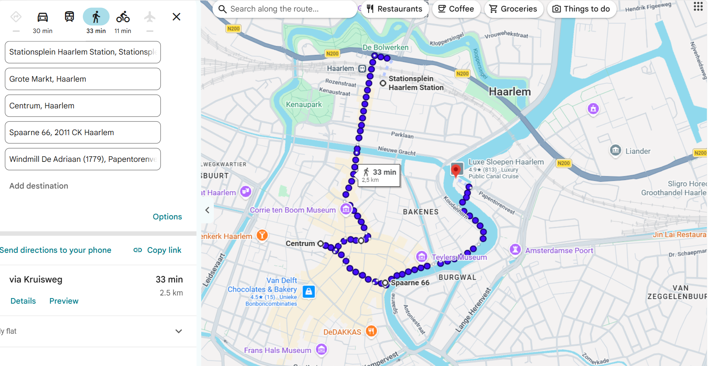

Historic City Centre
A compact area of narrow streets, brick houses and small canals. Best explored slowly on foot.

Where to Walk
A compact area of narrow streets, brick houses and small canals. Best explored slowly on foot.
The busy central square and the streets directly around it, full of cafes and historic facades.
Quiet side streets with well-kept gabled houses and small courtyards worth a slow look.
Pedestrian streets like Grote Houtstraat that combine walking with window shopping.
Suggested Short Walk

Station Haarlem → Grote Markt → City Centre → Spaarne Riverside → Molen de Adriaan